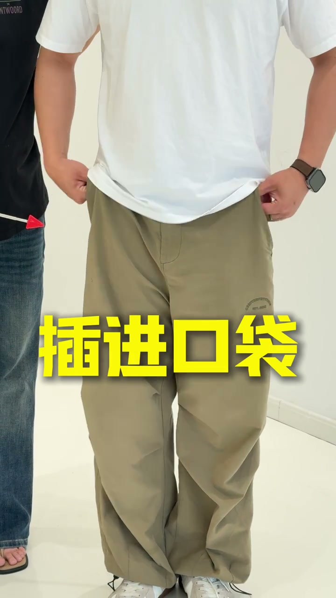
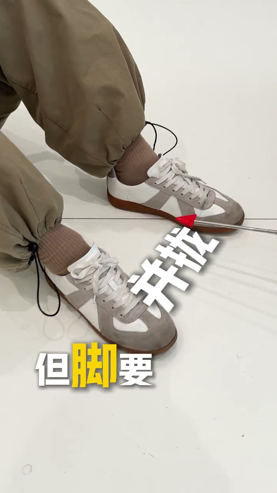
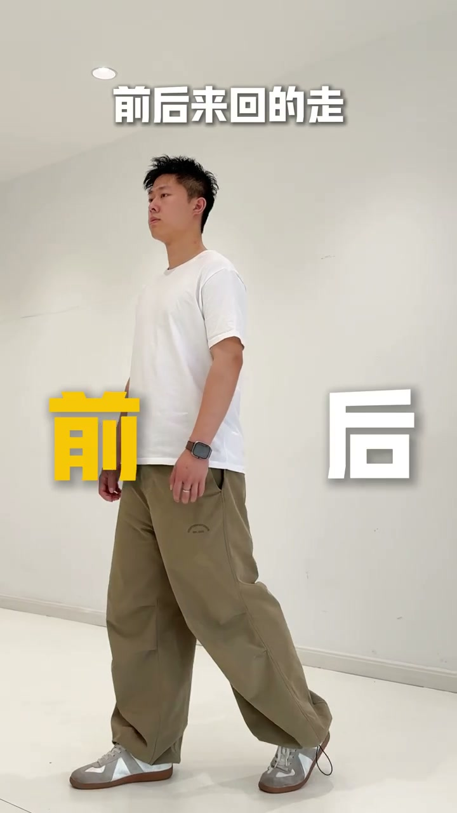

内容要点
[00:00] 为什么
[00:01] 为什么
[00:02] 我的评论区
[00:03] 这么多男生要学姿势啊
[00:06] 脚的就是男生拍照姿势
[00:09] 准备好了
[00:10] 第一步
[00:11] 放松一点摘
[00:13] 把你的手插进口袋
[00:16] 伸出一条腿
[00:18] 脚插点地
[00:20] 再挑起一点点你的肩膀
[00:23] 爱喝饮料吗
[00:26] 不要整个拿着
[00:28] 而是要用纸缚拿
[00:31] 再把手肘抬起来一些
[00:32] 那是啥
[00:36] 喝一会喽
[00:37] 让我想想还能怎么带
[00:40] 把腿分开
[00:41] 但脚要并拢
[00:42] 然后一只手撑脸
[00:44] 一只手搭腿
[00:45] 随你看镜头
[00:46] 还是看旁边
[00:47] 都可以
[00:51] 好了走吧
[00:52] 诶不是让你真走了
[00:54] 我是说假装地走
[00:56] 把重心放在两腿中间
[00:58] 前后来回地走
[01:09] 男生吗
[01:09] 学会了吗




